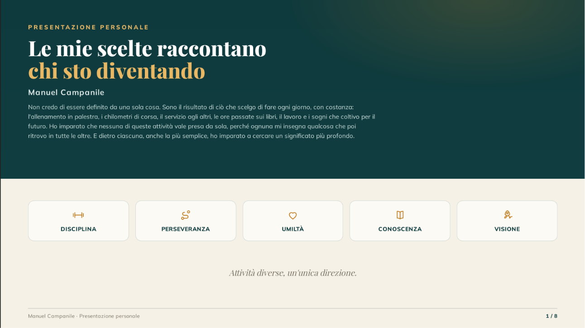

Sezione 01
Presentazione personale
Una panoramica su passioni, sport, volontariato, obiettivi e crescita personale.

Documento PDF
Questa sezione raccoglie la mia presentazione personale: il percorso di crescita, le passioni, la palestra, la corsa, il volontariato e gli aspetti che più mi rappresentano.